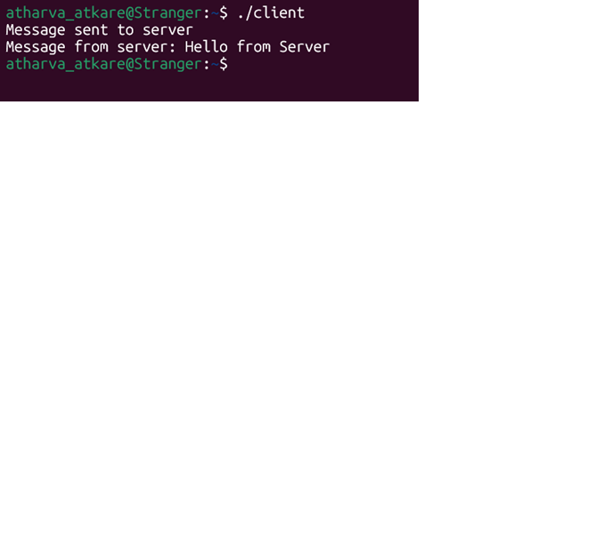

Linux Security Lab Project
This project demonstrates client-server communication using socket programming in C. The server listens on a specific port and waits for a client to connect. Once connected, both systems exchange messages using TCP protocol.
To develop a client-server application using socket programming and understand how data is transmitted over a network.
Client:
Message sent to server
Message from server: Hello from Server
Server:
Message from client: Hello from Client
Reply sent to client
This project helps understand networking concepts, socket programming, and real-time communication between systems. It is the foundation for building modern network applications.
Server listens on port 8080
Client connects using 127.0.0.1
Messages exchanged using sockets

Server and client communication output displayed successfully.